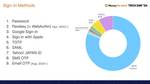
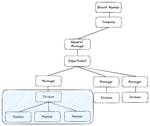

Money Forward Developers Blog
https://moneyforward-dev.jp/
株式会社マネーフォワード公式開発者向けブログです。技術や開発手法、イベント登壇などを発信します。サービスに関するご質問は、各サービス窓口までご連絡ください。
フィード
パスキー利用状況レポート @ マネーフォワード ID (vol.6, Oct 2024) 1
1
Money Forward Developers Blog
English version of this article is available here. はじめに 皆さんこんにちは、マネーフォワード ID サービス開発チームの@Mapduです。 Passkey Usage Report vol.5を公開し、WWDC 2024でのPasskey Auto Upgradeについて触れてから、数ヶ月が経ちました。当時は技術的な詳細が明らかにされていませんでした。 しかし、この度、マネーフォワード IDがユーザーログイン時にPasskey Auto Upgradeをサポートすると発表できることを嬉しく思います。この機能は2024年9月末にリリースされた…
1日前
約9年開発されている Rails アプリケーションを 6.1 から 7.0 へメジャーバージョンアップする 1
Money Forward Developers Blog
こんにちは クラウド経費開発チーム ・ クラウド債務支払開発チーム の 宮村（みやむー） @miyamura.koyo です。 先日、約9年開発されている Rails アプリケーションである、クラウド経費とクラウド債務支払の Rails バージョンを 6.1 から 7.0 へメジャーバージョンアップしました。 Ruby on Rails の EOL ※ 本記事では Ruby on Rails の EOL を 「Ruby on Rails が公開している各バージョンごとの Security Issues のサポート期限」と定義します。 Ruby on Rails の サポートは、シリーズの最初の…
3日前
初めての自社技術カンファレンスであるMoney Forward Tech Day 2024にプログラムディレクターが込めた思いとは？
Money Forward Developers Blog
Introduction こんにちは。マネーフォワードの Rusty です。エンジニアリング戦略室というところで、マネーフォワードグループのエンジニア組織全般の戦略策定や人材獲得・組織開発を管掌するVP of Engineering（以下、VPoE）をしています。 2024年9月20日にマネーフォワード初となるテックカンファレンス「Money Forward Tech Day 2024」を開催しました。多くの方に参加いただき、満足いただけたようでほっとしています。 私は、カンファレンスのコンテンツの品質に責任を持つ「Program Director」として関わらせていただきました。 今日は当日…
3日前

Passkey Autofill に賭けるマネーフォワード ID ~ Money Forward Tech Day 2024 24
Money Forward Developers Blog
Money Foward Tech Day 2024 こんにちは、@nov です。 先日 2024/09/20、Money Foward Tech Day 2024 というイベントで Passkey Autofill に賭けるマネーフォワード ID というお話をさせていただきました。 その時に使ったスライドはこちらに公開してあるのですが、スライド内の文章は日英併記が必要で、スライドレイアウトの調整が難しかったため、このスライドにはほとんど文章を入れていません。 結果として、このスライドだけでは、イベントに参加していなかった方々には内容が伝わりにくいと思いますので、ブログにも書き起こしておこうと…
8日前

All members must have leadership.
Money Forward Developers Blog
はじめに こんにちは。 サービス基盤本部長改め、Platform and Reliability Engineering本部長の鈴木です。 2024年7月から組織の再編があり、MFBC（マネーフォワードビジネスカンパニー） 1 のSREチームとサービス基盤本部が合併し、Platformの提供だけでなく、Reliabilityにも責任を持つ新たな本部となりました（これ以降、PRE本部と略して記載します）。新しい組織の立ち上がに際し、私が大事にしている考え、価値観を共有したいなと思っています。ただどうせなら、どなたかのお役に立ったり、今後加わるかもしれない新しい仲間たちにも共有できるようにと思い、…
8日前
DroidKaigi 2024に参加してきました！
Money Forward Developers Blog
こんにちは！残暑もすっかり和らぎ、秋の気配が感じられるようになりましたね。 マネーフォワード MEのAndroidアプリ開発をしております、akeybakoと申します。 9月11日から13日までの3日間、ベルサール渋谷ガーデンにて開催されたDroidKaigi 2024に参加してきました！ DroidKaigiは今年10周年を迎えた、Android技術者が集まるカンファレンスです。 例年通り、Androidに囲まれた空間で、Androidの魅力を再確認できた濃密な3日間でした。 今年も弊社のモバイルエンジニアが感銘を受けたセッション、いわゆる推しセッションの紹介とともに、その様子をお伝えしたい…
10日前

マネフォ新卒エンジニアによるiOSDC Japan 2024の振り返り！
Money Forward Developers Blog
はじめに こんにちは、マネーフォワード MEのiOSアプリ開発を行っている森岡です。 この度、新卒エンジニアとして初めてiOSDCに参加してきました！ 初参加なので「どんなイベントなんだろう」とワクワクしながら参加しました。 想像していた以上の熱気、たくさんの人との交流、多くの有意義な学びがあった3日間でした！ この記事ではその様子と感想を赤裸々にお伝えできればと思います。 熱気に圧倒される 会場に足を踏み入れた瞬間、目の前に広がる熱気に圧倒されました。 こんなに多くのiOSエンジニア、開発関係者が一堂に会する場があるのかと驚きました。 企業ごとのブースが多数出店されており、各社の出し物を見た…
18日前
夏の栃木にテックキャンプに行ってきました
Money Forward Developers Blog
こんにちは。実家から届いた大量の梨を毎日食べ続けている、マネーフォワード HRソリューション本部(以下HRS本部) 開発推進部のZukiこと水城秀平です。「組織の士気を上げるには」「真の効率化とは」などを常に自問自答し、実践する日々を過ごしています。 7月に私の所属するHuman Resource Solution本部（以降、HRS本部）のエンジニアで、1泊2日のキャンプに行ってきました。Zoomでのリモート参加も含めると多くのエンジニアが参加するビッグイベントとなりました。この記事はそのレポートです。楽しい雰囲気をぜひ感じていただきたいです！ テックキャンプの目的 キャンプの目的はチームビル…
21日前
不要な処理が実行速度を速くする謎を追う
Money Forward Developers Blog
こんにちは。 id:Pocke です。マネーフォワードでは Rails を用いた Web アプリケーションの開発と、RBS という Ruby の静的型システムの開発を行っています。 最近 RBS の開発をする中で、「不要な処理を削除すると実行速度が遅くなる」という不思議な現象に遭遇しました。この記事ではその現象を解説しようと思います。 なおこの記事は Ruby の知識を前提としないように執筆されており、Ruby の知識が必要となるところには注釈を加えて補足しています。 普段 Ruby を書かない方にも読んでいただければ幸いです。 問題を引き起こした変更 今回の問題は、RBS のメモリ使用量の削…
22日前
フロントエンドとバックエンドの開発の越境のためにチームで取り組んだこと
Money Forward Developers Blog
こんにちは、クラウド会計の開発チームでスクラムマスターをしているasatoです。 私たちのチームでは、以前はフロントエンド（FE）エンジニアとバックエンド（BE）エンジニアがそれぞれの領域だけを担当していましたが、最近では互いに越境し、どちらの領域でも自立して開発を進められるようになりました。このブログでは、その越境のために私たちが取り組んだことを紹介します。同じように悩む方の助けや勇気づけになれば幸いです。 背景 私たちのチームはスクラムでWebアプリケーションを開発しています。エンジニアは職種としてFEエンジニア、BEエンジニア、QAエンジニアに分かれており、FE・BEエンジニアはそれぞれ…
24日前
【福岡開発拠点発イベント】Fukuoka TechTalk+ 開催レポート
Money Forward Developers Blog
はじめに 皆さんこんにちは、マネーフォワード ERP開発本部 ガーディアングループ クラウド経費チームのてっしーこと@tositeです。 私はFukuoka TechTalk（以下、TechTalk）という社内コミュニティの運営にも携わっています。 今日は福岡開発拠点で定期的に開催している社内向けテックイベント「Fukuoka TechTalk+（以下、TechTalk+）」の様子をお伝えします！ ※ TechTalk+は前述したTechTalkの拡張回的な位置づけとなるイベントです。詳細は後述します。 TechTalkとは？ TechTalkとは、2019年から福岡開発拠点で開催している社内…
1ヶ月前
YANS2024に参加しました！
Money Forward Developers Blog
Money Forward Labで自然言語処理（NLP）のリサーチャーをしている山岸（@hargon24）です。 この記事では、2024年度の第19回言語処理若手シンポジウム（YANS2024）の参加報告をします。Labはゴールドスポンサーとして参加し、山岸個人はLabのスポンサーブースのスタッフとしてだけでなく、YANSの運営委員としても参加しました。 YANS2024とは 学会名: 第19回言語処理若手シンポジウム（YANS2024） 会期: 2024年9月4日 - 6日（ハッカソン1日 + 本会議2日） 会場: 大阪・梅田スカイビル ページ: https://yans.anlp.jp/…
1ヶ月前
チームメンバーの巻き込みと二人登壇によって、登壇の心理的ハードルが下がった話
Money Forward Developers Blog
はじめに こんにちは。マネーフォワード ERP開発本部 ガーディアングループ クラウド経費チームのせっきーこと @sekky です。2024年4月入社で、今回が初めてのブログ投稿になります！ 想定する読者 この記事の想定読者は、「登壇の経験はあまりないが、将来的にはやってみたい。でも自分にはハードルが高いかも・・・」と感じている方です。 この前、他チームのメンバーと登壇について話した際、「近いうちに登壇やってみたいんですよね」と話したことが本ブログ執筆のきっかけとなりました。 それを聞いて、登壇をしてみたいがハードルが高いと感じている方が潜在的にいるのではないか、と思いました。 また、チームメ…
1ヶ月前
マネーフォワードはDroidKaigi 2024にGOLD SPONSORとして協賛します
Money Forward Developers Blog
こんにちは。Androidエンジニアの宮本です。 2024年9月11日(水)から13日(金)にかけて開催されるDroidKaigi 2024に、マネーフォワードはGOLD SPONSORとして協賛します。 ブース情報 会場B1Fの協賛エリアにて、スポンサーブースを出展します。 私も含め、当社のAndroidエンジニアなど社員が数名ブースに居る予定です。 ブースではアンケートに答えていただいた方へお菓子のプレゼントがあります。 また、マネーフォワードのモバイルエンジニアが携わるサービスの展示も行います。 セッション間の休憩時間ごとに入れ変わりで実施するため、このサービスのエンジニアと話してみたい…
1ヶ月前
GitHub Actionsで新規クエストのお知らせをSlackに自動投稿する
Money Forward Developers Blog
はじめに こんにちは。 マネーフォワード福岡開発拠点でSREとして働いているM-Yamashita です。 今回の記事は、GitHub Actionsを使ったSlackへの自動投稿の話です。 現在、クラウド経費・クラウド債務支払サービスの開発においてクエストという制度を採用しています。クエストを新しく作成するたび、開発メンバーに知らせるために手動で都度Slackに投稿していました。この手動作業を自動化した話をお伝えします。 クエストとは 経費・債務支払サービスでは開発ロードマップに沿って日々開発を進めています。この開発と並行して、内部改善をしていくことも重要です。 弊社ではそのような内部改善を…
1ヶ月前
iOS Engineer Meetup in Money Forward 開催レポート
Money Forward Developers Blog
マネーフォワード MEのモバイルエンジニアの高橋です。 今回はマネーフォワード主催の「iOS Engineer Meetup in Money Forward」を開催しましたので、その様子を紹介したいと思います！ moneyforward.connpass.com 「iOS Engineer Meetup in Money Forward」について 本イベントは「iOS関連技術を肴に交流を加速しよう」をコンセプトに、 iOS関連技術のナレッジをインプットするのはもちろん、iOSエンジニア同士が交流することで生まれる体験を楽しむきっかけとなってほしいという思いで開催いたしました。 今回の内容とし…
1ヶ月前
Rails アプリの不要なテストデータをガっと消した🚮
Money Forward Developers Blog
こんにちは、id:Pocke です。マネーフォワードではクラウド会計Plusというプロダクトの開発と、RBS という Ruby の静的型のためのライブラリの開発の両方を行っています。今回の記事では、クラウド会計Plusの開発の話を書こうと思います。 TL;DR spec/fixtures/下に想像以上に多くのファイルがあることに気がついた inotify を使って不要なファイルを検出し、削除した 問題の発見 クラウド会計Plusの開発業務として、私は最近不要なコードの削除に取り組んでいます。その一環としてリポジトリの状況を調査していました。その中で以下のコードを用いて「拡張子ごとのファイル数」…
2ヶ月前
Scrum Fest Sendai 2024 登壇・参加レポート
Money Forward Developers Blog
こんにちは、クラウド会計の開発チームでスクラムマスターをしているasatoです。 このブログは、2024年8月23日〜24日で開催されたScrum Fest Sendai 2024における登壇・参加レポートです。 Scrum Fest Sendai 2024について www.scrumfestsendai.org 全国各地でScrum Fest（スクフェス）が開催されておりますが、仙台でも2022年から開催されています。それがScrum Fest Sendaiです。実は私、昨年も参加しておりました（トップの写真にもいますね）。 私は大学・大学院の時期を仙台で過ごしたので、この地には個人的な縁を…
2ヶ月前
Money Forward Labにおける日本の金融分野に特化したLLMの開発の取り組み
Money Forward Developers Blog
Posted by Atsushi Kojima and Wang Yingjie (conducted the work during his internship), Researchers, Money Forward Lab. はじめに 近年、GPT-4などの大規模言語モデル（LLM）が注目を集めていますが、これらのモデルは必ずしも日本の金融分野に特化して学習されているわけではありません。 この課題に取り組むため、私たちは日本の金融・会計分野にアラインメントされたLLMの開発に取り組んでいます。 本ブログでは、その開発プロセスと成果について紹介します。 モデル開発のアプローチ モデル学…
2ヶ月前
default_value_for gem を Rails 標準機能に置き換えて削除する際の注意点
Money Forward Developers Blog
こんにちは、 クラウド経費開発チーム ・ クラウド債務支払開発チーム の 宮村（みやむー） @miyamura.koyo です！ Ruby には default_value_for という gem があります。 これは以下のように属性のデフォルト値を設定できる便利な gem です。 class User < ActiveRecord::Base default_value_for :name, "(no name)" default_value_for :last_seen { Time.now } end u = User.new u.name # => "(no name)" u.last…
2ヶ月前
Rubyエンジニア、Kotlinエンジニアへの道：Extension functionsって使っていいの？
Money Forward Developers Blog
はじめに こんにちは。福岡開発拠点でエンジニアの小林です。 これまではRubyで開発をしてきましたが、最近はサーバーサイドKotlinでの開発を行っています。 Rubyエンジニアの私がKotlinを学ぶ上で疑問に思ったこととして、前回は「Companion objectとは何なのか」について紹介しました。 今回はExtension functionsについて学んだことを書きます。 対象読者 RubyエンジニアでKotlinを学び始めた方 疑問：Extension functionsって使っていいの？ Extension functionsとは、Kotlinでクラスに新しい関数を拡張する機能です…
2ヶ月前
Encraft#16での「マネーフォワードを支えるメール配信基盤」の登壇で話しきれなかったメール配信基盤の歴史について
Money Forward Developers Blog
はじめに こんにちは。CTO室基盤アプリケーション部の斉藤(x-color)です。 先月末の7/29にプロダクトを支えるコアシステム - Encraft #16に登壇してきました。 少々遅くなってしまいましたが、本ブログでは時間の都合上、登壇時に触れなかった部分を紹介していきたいと思います。 そもそも何に登壇してきたの？ 「Encraft」という株式会社ナレッジワーク様が主催している勉強会に登壇してきました。こちらは月1回のペースで開催されている（過去の配信アーカイブはこちら）イベントであり、毎月異なるテーマで行われます。今回は「プロダクトを支えるコアシステム」といったテーマで実施され、会社経…
2ヶ月前
9月20日（金） Money Forward Tech Day 2024 を開催します！ #mf_techday
Money Forward Developers Blog
序文 こんにちは！エンジニアリング戦略室 の @luccafort です。 来たる9月20日（金） 13時より「Money Forward Tech Day 2024」を開催します！ 今回のカンファレンステーマは「Let's make it!（共に創り、実現する）」です。 マネーフォワードとして初開催となる自社カンファレンスということで関係者一同、現在鋭意作成中です。 ぜひ足を運んでいただければと思います。 その他、詳細に関しては特設サイトをご確認ください。 techday.moneyforward-dev.jp イベント概要 カンファレンス名: Money Forward Tech Day …
2ヶ月前
技術顧問giginetと取り組む “Evolution” できる環境づくり【iOSDC Japan 2024 パンフレットインタビュー完全版】
Money Forward Developers Blog
2024年8月22日(木)からiOSDC Japan 2024が始まりますね！今年のパンフレットでは2022年新卒入社で、マネーフォワード Pay for Businessの開発に携わるsakaiさんと、マネーフォワード技術顧問のgiginetさんのインタビューを掲載させていただきました。 今回はパンフレットには入り切らなかった内容を、ブログでご紹介できればと思います。ぜひご覧ください。 ※このインタビューは2024年5月に実施したものです 全員参加型、対面でのコミュニケーションを重視した技術顧問勉強会 ── giginetさんは技術顧問として、日々の業務相談はもちろん、定期的に勉強会を開催し…
2ヶ月前
Rubyエンジニア、Kotlinエンジニアへの道：Companion objectとは何なのか
Money Forward Developers Blog
こんにちは。福岡開発拠点でエンジニアの小林です。 これまではRubyで開発をしてきましたが、最近はサーバーサイドKotlinでの開発を行っています。 私にとってKotlinを使って実装するのは全くの初めてです。日々悪戦苦闘しながら学びを深めています。 Ruby一筋で育ってきたからなのか、Kotlinでの実装最中に「Rubyだとあんな風に書けるけど、これKotlinでどう書くんだろうな」だったり「なんでこういう書き方してるんだろうな」だったりを感じることが多くあるのですが、そういった場合におけるRubyエンジニア観点からの記事があまり見当たらないなと感じました。 そこで、私なりの視点でRubyエ…
2ヶ月前
Steepのメモリ使用量を改善するつもりが、実行速度の改善をしていた
Money Forward Developers Blog
こんにちは。id:Pocke です。 私は最近、Steep のメモリ使用量の改善に取り組んでいます。その過程で(意図せず) Steep の実行速度の改善に成功しました。 その中で行った、メモリ使用量の調査や、結果として実行速度が改善されたことは自分にとって中々楽しい体験でした。この記事では実行速度の改善に至るまでの経緯を紹介します。 記事中のソフトウェアは、執筆時点で最新のものを使用しています。具体的なバージョンは以下の通りです。 Ruby: 3.3.4 MemoryProfiler: 1.0.2 Steep: 1.8.0.dev.1 TL;DR メモリ使用量の調査のために、memory_pr…
3ヶ月前
Money Forward Tech Event vol.2 開催レポート
Money Forward Developers Blog
はじめに 春が終わったと思ったら一足飛びで夏が来ましたね。眩しい青空の下、暑い日が続きますが、皆さまお変わりなくお過ごしのことと存じます。 どうも、マネーフォワード ERP開発本部 ガーディアングループ クラウド経費チームのてっしーこと@tositeです。 さて、マネーフォワードでは去る2024年7月11日に、弊社CQOの高橋寿一を迎え「Money Forward Tech Event vol.2」と題した福岡開発拠点主催のテックイベントを開催しました！ moneyforward.connpass.com 👇第一回目のイベントはこちら 👇 moneyforward.connpass.com 今…
3ヶ月前
Money ForwardにおけるAWSセキュリティ統制システムA-SAFの紹介
Money Forward Developers Blog
はじめに こんにちは、Money Forward CISO室の万萌遠（バン・ホウエン）です。私は主にAWSセキュリティ統制システム「A-SAF(AWS-Security Alert Forwarding system)」の企画、開発、運用を担当してきました。運用も安定してきたので、今回はA-SAFシステムの紹介と、AWSをはじめとしたクラウド環境のセキュリティ統制についての心得を共有したいと思います。 A-SAFを作るモチベーション クラウド環境のセキュリティといえば、CSPM（Cloud Security Posture Management）、CWPP（Cloud Workload Pro…
3ヶ月前
「稲作」のメタファーで「現在・未来」の「ゲイン・ペイン」に注目したら、とても前向きにふりかえりできた
Money Forward Developers Blog
こんにちは、クラウド会計の開発チームでスクラムマスターをしているasatoです。 自作のふりかえりフレームワークがいい感じに機能したので紹介します 🙌 その名も「稲作（Rice Cultivation）」です。 背景 私はスクラムマスターとして、チームのふりかえりをファシリテーションする機会が多いです。当然のようにお気に入りのふりかえりフレームワークがあります。その辺は、個人のブログで語っています。 ブログでも語っている通り、私は「象・死んだ魚・嘔吐」が好きです。メタファーが想像力を掻き立ててくれます。 象🐘：誰も言わないので言いにくいと感じているが、大きな障害物だと思っているもの（英語の…
3ヶ月前
日本初のFlutterグローバルカンファレンス「FlutterNinjas Tokyo 2024」にゴールドスポンサーとして協賛しました！
Money Forward Developers Blog
こんにちは！いよいよ梅雨が本格化してきましたが、皆さんはいかがお過ごしでしょうか？マネーフォワードでFlutterエンジニアをしています小川(@heyhey1028)です。 6月はカンファレンスが目白押し。そんな中、2024年6月13日・14日に開催された、Flutterに特化したグローバルカンファレンス「FlutterNinjas Tokyo 2024」にマネーフォワードがゴールドスポンサーとして協賛しました。 マネーフォワードは今日からはじまる #FlutterNinjas にゴールドスポンサーをしています🥷📱ブースではクイズを行っているのでぜひ遊びにきてください🙌🎉 pic.twitte…
4ヶ月前